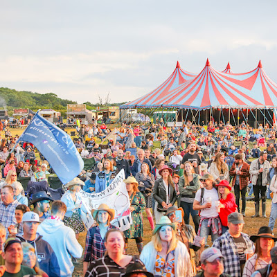
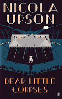
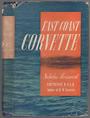
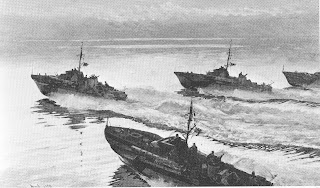
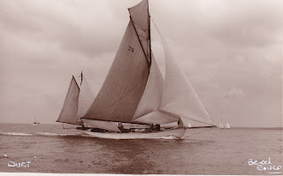
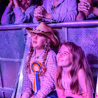

 |
| Tennessee Fields - went ahead in 2021 All set again for 2022 |
{kind=link}
It’s festival time. Book festivals, music festivals, dance festivals, beer festivals, curry festivals, car festivals. There are garden festivals, BBQ festivals, happenings, experiences, shows, regattas, fetes, fairs - and fayres.
 |
| Margery Allingham makes a guest appearance |
{kind=link}
There’s the Essex Book Festival too – more than 100 events across the county. It used to be in March but now it, too, is in joyous June. Last night I was at Harwich library talking about Uncommon Courage. I arrived feeling faintly nervous as I always do: left feeling refreshed and invigorated by the attention and friendship of the library audience. I’m sure I’m not the only writer who finds book festival events offer new life to the printed page. Nicola Upson describes the Felixstowe Festival as 'the sort of inspirational event that reminds authors why they write.'
 |
| Monsarrat in Harwich published 1943 |
 |
| MTBs at Dawn by David Cobb |
{kind=link}
 |
| August Courtauld's Duet is coming to Suffolk and the Sea |
{kind=link}
You’ll guess I’m thinking about Tennessee Fields here – I’ve written previously about my amazement at the extent of the arrangements summarised in Georgie’s inches thick management plan. But even a simple ‘fringe’ event like Suffolk and the Sea needs a venue to be booked, volunteers willing to give their time, travel to be prearranged. Perhaps we subsist so happily on goodwill that artist contracts are not a factor but just one step up to the main event and commitments must be made that are not ‘just’ time and goodwill but hard cash too. For musicians in particular performance = livelihood. I can’t bear to tell you what it costs to bring a Nashville star to play on an Essex stage. Tickets purchased in advance make the audience partners in the enterprise and give the festival organiser a chance to sleep at night.
This year we are all last-minuters. We want to go out but we're still worried about covid infections; fuel price-rises are terrifying; we fear cancellations beyond our control; if we buy a ticket for an event, maybe we can't eat that week...? If that's the case, then okay, fun is off the menu - or it's DIY. But perhaps we need to wonder whether we're still unconsciously caught in such a negative mind-set that we can't believe that an evening or weekend of live cultural experience will actually do us good. Watching via Zoom is not going to be the same.
 |
| The magic of a live event |
{kind=link}
Spare a thought for the festival organisers, desperately trying to balance their essential spending with the reluctant revenue stream. Perhaps the last-minuters will arrive like the cavalry over the skyline? But what if they don't.... Whisper it not -- even Lords cricket ground wasn't booked solid in advance of the New Zealand Test match. Should they cancel? I wouldn't be a festival organiser lying awake through the graveyard hours.
So if you know in your heart that you can afford to have fun and also eat, please don't wait until the evening before to book your ticket, take a look round to see what's happening near you and book it now.
{kind=link}
I've just taken my own advice, bought a ticket and am going to listen to RSC's Michael Pennington in Trimley on Sunday. What's available where you are?
If you'd like to come to Felixstowe Book Festival or Tennessee Fields here are the TICKET LINKS!. And if you get yourself organised to arrive at the Suffolk and the Sea day by boat, get in touch with julia@golden-duck.co.uk and you may find that your ticket-in-advance is free!
{kind=link}